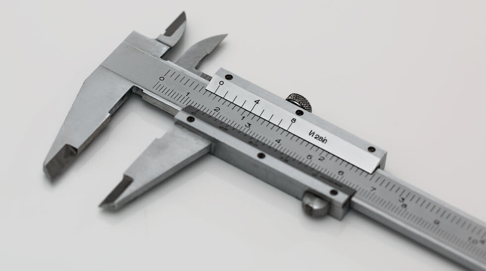

El pie de rey, también conocido como calibrador o vernier, es un instrumento de medición de magnitudes de alta precisión que sirve para medir las dimensiones de pequeños objetos o superficies y conocer sus diámetros interiores y exteriores con un alto grado de precisión.
